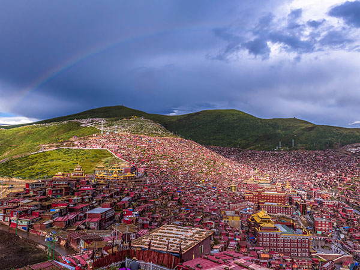

Wuming Buddhist College
Larung Gar Buddhist Academy
Find any resources in the official website
Official Website

This module is run by the Google website.
In 1980, Kyabje Khenchen Jigme Phuntsok founded Larung Gar, which was officially named by the 10th Panchen Lama in 1987 as Serta Larung Five Science Buddhist Academy, also known of in Tibetan: བླ་རུང་ལྔ་རིག་ནང་བསྟན་སློབ་གླིང་།, ZYPY: Serta Larung Ngarig Nangdän Lobling, (Chinese: 喇荣五明佛学院; pinyin: Larong Wuming foxueyuan), located in the Larung Valley (喇荣沟) near the township of Larung in Sêrtar County, Garzê Prefecture, Sichuan Province, known of as Kham. The Serta Larung Five Science Buddhist Academy grew from Khenchen Jigme Phuntsok's mountain retreat. The purpose of Larung Gar's Academy is to provide an ecumenical training in Tibetan Buddhism and to meet the need for renewal of meditation, ethics, and scholarship all over Tibet in the wake of China's Cultural Revolution of 1966-76.[1]
Despite the remote location, an ancient prophecy by the first Dodrupchen Rinpoche named its founder and described its location, and the site is considered sacred.[2] Larung Gar's Academy grew from less than a dozen students gathering around Khenchen Jigme Phuntsok's home, to a community of more than a hundred students living in mud huts by 1981, as reported by International Campaign for Tibet.[3]
According to several Tibetan advocacy organizations, the Academy continued growing as monks, nuns, and lay students relocated and built residences, to become one of the largest and most influential ecumenical centers for the study of Tibetan Buddhism in the world.By 2001, the Academy grew to number 8,500 monks and nuns, with an additional 1,000 Chinese students, and more lay persons.[3] By 2016, the number of official residents had grown to 10,000, while the unofficial estimated number was between 20,000 to 40,000 people, according to a joint 2017 report by Tibet Watch and Free Tibet
Demographics
The Academy's principles of teaching and training are: "Unity and Harmony"; "Pure Precepts"; "Listening, Reflecting and Meditating"; and "Spreading the Dharma to Benefit Sentient Beings".
The student body of Larung Gar Five Science Buddhist Academy is composed of monks, nuns, lay "vow-holders" and tantric practitioners, of mostly Tibetan and Chinese origins, while Mongolians and students from other Asian countries also figure prominently.
Students are associated with one of the four institutions at the Academy: the Ngarig Nangten Lobling monastery, the Pema Khandro Duling Nunnery, the Lektso Charbeb Ling center, and the International Religious Committee.
History
|
establishment
A mountain hermitage was previously established near the location in 1880 by Dudjom Lingpa, and earlier incarnation of Dudjom Rinpoche.
Yogis resided there, such as Khenchen Jigme Phuntsok's previous incarnation Terton Lerab Lingpa's student Chatrel Choying Rangdrul, and great realizations were gained in the sacred area.
After escaping the Cultural Revolution to reside in the near area with a group of loyal monks, Khenchen Jigme Phuntsok officially took over the mountain hermitage in the summer of 1980 and founded Larung Gar, based on the tradition of Buddhist encampments (chos sgar).
Larung Gar's Academy, also known as the Sertar Buddhist Institute, opened and operated privately and independently,[6] with a standing executive committee of seven learned khenpos, or lamas, but major decisions were confirmed and implemented only after consultation with Khenchen Jigme Phuntsok.
|
|
Development
In 1987, the 10th Panchen Lama bestowed the name of Sertar Larung Ngarig Nangten Lobling, with the ambition to create a "spiritual oasis" and the largest center for Tibetan Buddhist studies.
As Antonio Terrone writes, Khenchen Jigme Phuntsok's "dedication to rigorous monastic learning, the Vinaya code of conduct, and a commitment to an ecumenical system of teaching" welcomed students "from all traditions of Tibetan Buddhism.
The Academy has graduated more than 500 khenpos and khenmos — male and female holders of Doctoral degrees in Buddhism — and is widely renowned for the high quality of both its spiritual and secular education. English, Chinese, and Tibetan languages and modern computer studies have been taught alongside a traditional non-sectarian Buddhist curriculum.
The khenpos and khenmos then are authorized to establish Buddhist centers and monasteries, which further propagates Tibetan Buddhism and intertwines with Tibetan culture.[8] As Terrone also writes, "Larung Gar is a landmark of his commitment to disseminate Buddhism in an ecumenical fashion, to strengthen monasticism and Buddhist ethics, and to heighten religious education and Tibetan traditional culture."